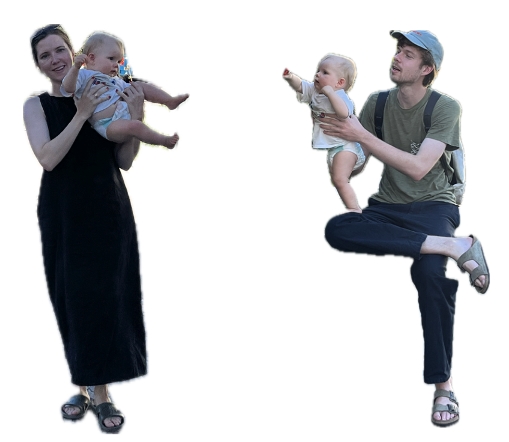

OM
LINYER är ett arkitektkontor baserat i Stockholm och Zürich, grundat och drivet av Lowis Gujer och Emma Lindén sedan 2024. Även om deras huvudsakliga expertis ligger i det lokala och småskaliga sträcker sig deras intresse över ett brett spektrum av ämnen såsom arkitektonisk design för offentliga byggnader och utbildningslokaler, konstruktiva detaljlösningar i 1:1, visualisering av idéer genom illustrationer och modeller, stadsplanering och skrivande. I sitt arbetssätt strävar de alltid efter att kommunicera med och förstå alla inblandade, då varje perspektiv kan berika utvecklingen av en idé. Förutom sitt engagemang för LINYER är båda involverade i andra projekt. Lowis är anställd som undervisningsassistent vid Chair of Architectural Behaviorology med Prof. Momoyo Kaijima på institutionen för design och arkitektur D-ARCH ETHZ. Emma arbetar som projektledande arkitekt för Sakke Studio i de tidiga projektskeden.
Emma Lindén (f. 1994, Stockholm SE) är arkitekt MAS/SAR. Under sina studier vid Kungliga Tekniska Högskolan i Stockholm gjorde hon ett utbytesår vid ETHZ. Hon har arbetat för General Architecture, Lütjens Padmanabhan, Maich Swift och Boltshauser Architekten innan hon började på SAKKE Studio.
Lowis Gujer (f. 1995, Zürich CH) är arkitekt MSc Arch. ETHZ. Han tog examen vid ETHZ med ett examensarbete med titeln "Eine Stadt ohne Schlachthof?" under handledning av Prof. Momoyo Kaijima. Efter erfarenheter från arkitektkontor i Zürich, Stockholm och London arbetar han sedan början av 2024 vid Chair of Architectural Behaviorology. Där är han undervisningsassistent för andra årets designkurs, masterkursen "Japan Studio" och andra undervisningsprojekt.
KONTAKT
contact@linyer.info
4. vån Neue Hard 12
CH-8004 Zürich
LÄNKAR
- Sakke Studio
- Chair of Architectural Behaviorology, Prof. Momoyo Kaijima, D-ARCH, ETHZ
- Die Säulenhalle: Äntligen ett centrum för Zürich West!
- Eine Stadt ohne Schlachthof?
SAMARBETSPARTNERS
Dalla Santa Birkeland Arkitekter, Nando von Arb, Lauro Nächt, Beatrice Kiser, Lars Ruge, Hochparterre, IGHZH, Stiftung Hamasil